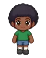

Wiki › Quests › 💭 The Munich report
💭 The Munich report
Level 160 Side quest Brazil

The story
I’m writing a report for the clubs in Europe. In Munich the fans sing in Tyrolean hats! Can you bring me a Tyrolean Hat from there, so my report is complete?
What to do
🎯 Collect 1x Tyrolean Hat (Munich)
- Collect 1x
 Tyrolean Hat
Tyrolean Hat
📍 Where to find it and how to get there
👾Who:  Ice Guardian — Level 161 (drops the most Tyrolean Hat)
Ice Guardian — Level 161 (drops the most Tyrolean Hat)
🗺️Where: Blizzard Arena (Munich)
🧭Trip: ✈️ Take the plane to Munich, Germany (from level 148) — in Brazil, the airport is in the City, with Flight Attendant Luana.
🧭Path: from there: Munich → Blizzard Arena
📌Inside: on the left of the map (west)
Rewards
- ⭐ 1,702,920 XP
- 🪙 48,000 coins
When you finish (there may be a surprise!)
Munich report done! The German clubs are going to want to know about you.
⬅️ First, finish: 💭 The lost notes
➡️ Then unlocks: 💭 Talent in Madrid